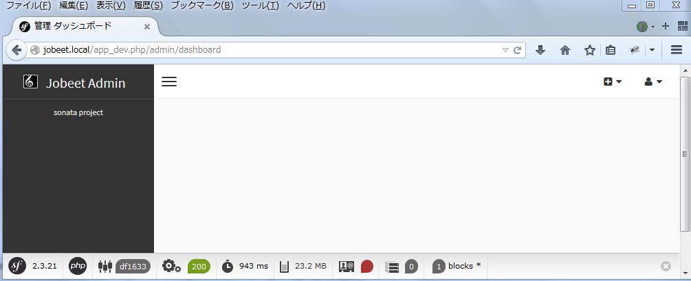

31. Day 12: Sonata Admin Bundle¶
- This article is part of the original Jobeet Tutorial, created by Fabien Potencier, for Symfony 1.4.
With the addition we made in Day 11 on Jobeet, the application is now fully usable by job seekers and job posters. It’s time to talk a bit about the admin section of our application. Today, thanks to the Sonata Admin Bundle, we will develop a complete admin interface for Jobeet in less than an hour.
31.1. Installation of the Sonata Core Bundle¶
At first, you install SonataCoreBundle:
$ php composer.phar require sonata-project/core-bundle:~2.2
Add SonataCoreBundle to your application kernel:
app/AppKernel.php
// ...
public function registerBundles()
{
$bundles = array(
// ...
new Sonata\CoreBundle\SonataCoreBundle(),
// ...
);
}
// ...
Create a configuration file sonata_core.yml with this content:
app/config/sonata_core.yml
sonata_core: ~
Update the config.yml with the new resource to import:
app/config/config.yml
imports:
#...
- { resource: sonata_core.yml }
31.2. Installation of the Sonata Admin Bundle¶
Start by downloading SonataAdminBundle and its dependencies to the vendor directory:
$ php composer.phar require sonata-project/admin-bundle
To install the latest version of the SonataAdminBundle and its dependencies, give * as input.
ibw@ubuntu:/var/www/jobeet$ php composer.phar require sonata-project/admin-bundle
Please provide a version constraint for the sonata-project/admin-bundle requirement: *
We will also need to install the SonataDoctrineORMADminBundle:
$ php composer.phar require sonata-project/doctrine-orm-admin-bundle
Now, we need to declare these new bundles and dependencies, so go to your AppKernel.php file and add the following code:
app/AppKernel.php
// ...
public function registerBundles()
{
$bundles = array(
// ...
new Sonata\AdminBundle\SonataAdminBundle(),
new Sonata\BlockBundle\SonataBlockBundle(),
new Sonata\DoctrineORMAdminBundle\SonataDoctrineORMAdminBundle(),
new Knp\Bundle\MenuBundle\KnpMenuBundle(),
);
}
// ...
You will need to alter your config file as well. Add the following at the end:
app/config/config.yml
# ...
sonata_admin:
title: Jobeet Admin
sonata_block:
default_contexts: [cms]
blocks:
sonata.admin.block.admin_list:
contexts: [admin]
sonata.block.service.text:
sonata.block.service.action:
sonata.block.service.rss:
Also, look for the translator key and uncomment if it is commented:
app/config/config.yml
# ...
framework:
# ...
translator: { fallback: %locale%}
# ...
#...
For your application to work, you need to import the admin routes into the application’s routing file: app/config/routing.yml
admin:
resource: '@SonataAdminBundle/Resources/config/routing/sonata_admin.xml'
prefix: /admin
_sonata_admin:
resource: .
type: sonata_admin
prefix: /admin
# ...
Now, install the assets from the bundles:
$ php app/console assets:install web --symlink
Do not forget to delete your cache:
$ php app/console cache:clear --env=dev
$ php app/console cache:clear --env=prod
You should now be able to access the admin dashboard using the following url: http://jobeet.local/app_dev.php/admin/dashboard
31.3. The CRUD Controller¶
The CRUD controller contains the basic CRUD actions. It is related to one Admin class by mapping the controller name to the correct Admin instance. Any or all actions can be overwritten to suit the project’s requirements. The controller uses the Admin class to construct the different actions. Inside the controller, the Admin object is accessible through the configuration property. Now let’s create a controller for each entity. First, for the Category entity:
src/Ibw/JobeetBundle/Controller/CategoryAdminController.php
<?php
namespace Ibw\JobeetBundle\Controller;
use Sonata\AdminBundle\Controller\CRUDController as Controller;
class CategoryAdminController extends Controller
{
// Your code will be here
}
And now for the Job:
src/Ibw/JobeetBundle/Controller/JobAdminController.php
<?php
namespace Ibw\JobeetBundle\Controller;
use Sonata\AdminBundle\Controller\CRUDController as Controller;
class JobAdminController extends Controller
{
// Your code will be here
}
31.4. Creating the Admin class¶
The Admin class represents the mapping of your model and administration sections (forms, list, show). The easiest way to create an admin class for your model is to extend the SonataAdminBundleAdminAdmin class. We will create the Admin classes in the Admin folder of our bundle. Start by creating the Admin directory and then, the Admin class for categories:
src/Ibw/JobeetBundle/Admin/CategoryAdmin.php
<?php
namespace Ibw\JobeetBundle\Admin;
use Sonata\AdminBundle\Admin\Admin;
use Sonata\AdminBundle\Datagrid\ListMapper;
use Sonata\AdminBundle\Datagrid\DatagridMapper;
use Sonata\AdminBundle\Validator\ErrorElement;
use Sonata\AdminBundle\Form\FormMapper;
class CategoryAdmin extends Admin
{
// Your code will be here
}
And for jobs:
<?php
src/Ibw/JobeetBundle/Admin/JobAdmin.php
namespace Ibw\JobeetBundle\Admin;
use Sonata\AdminBundle\Admin\Admin;
use Sonata\AdminBundle\Datagrid\ListMapper;
use Sonata\AdminBundle\Datagrid\DatagridMapper;
use Sonata\AdminBundle\Validator\ErrorElement;
use Sonata\AdminBundle\Form\FormMapper;
use Sonata\AdminBundle\Show\ShowMapper;
use Ibw\JobeetBundle\Entity\Job;
class JobAdmin extends Admin
{
// Your code will be here
}
Now we need to add each admin class in the services.yml configuration file:
src/Ibw/JobeetBundle/Resources/config/services.yml
services:
ibw.jobeet.admin.category:
class: Ibw\JobeetBundle\Admin\CategoryAdmin
tags:
- { name: sonata.admin, manager_type: orm, group: jobeet, label: Categories }
arguments:
- ~
- Ibw\JobeetBundle\Entity\Category
- 'IbwJobeetBundle:CategoryAdmin'
ibw.jobeet.admin.job:
class: Ibw\JobeetBundle\Admin\JobAdmin
tags:
- { name: sonata.admin, manager_type: orm, group: jobeet, label: Jobs }
arguments:
- ~
- Ibw\JobeetBundle\Entity\Job
- 'IbwJobeetBundle:JobAdmin'
At this point, we can see in the dashboard the Jobeet group and, inside it, the Job and Category modules, with their respective add and list links.

31.5. Configuration of Admin classes¶
If you follow any link right now, nothing will happen. That’s because we haven’t configure the fields that belong to the list and the form. Let’s do a basic configuration, first for the categories:
src/Ibw/JobeetBundle/Admin/CategoryAdmin.php
namespace Ibw\JobeetBundle\Admin;
use Sonata\AdminBundle\Admin\Admin;
use Sonata\AdminBundle\Datagrid\ListMapper;
use Sonata\AdminBundle\Datagrid\DatagridMapper;
use Sonata\AdminBundle\Validator\ErrorElement;
use Sonata\AdminBundle\Form\FormMapper;
class CategoryAdmin extends Admin
{
// setup the default sort column and order
protected $datagridValues = array(
'_sort_order' => 'ASC',
'_sort_by' => 'name'
);
protected function configureFormFields(FormMapper $formMapper)
{
$formMapper
->add('name')
->add('slug')
;
}
protected function configureDatagridFilters(DatagridMapper $datagridMapper)
{
$datagridMapper
->add('name')
;
}
protected function configureListFields(ListMapper $listMapper)
{
$listMapper
->addIdentifier('name')
->add('slug')
;
}
}
And now for jobs:
src/Ibw/JobeetBundle/Admin/JobAdmin.php
namespace Ibw\JobeetBundle\Admin;
use Sonata\AdminBundle\Admin\Admin;
use Sonata\AdminBundle\Datagrid\ListMapper;
use Sonata\AdminBundle\Datagrid\DatagridMapper;
use Sonata\AdminBundle\Validator\ErrorElement;
use Sonata\AdminBundle\Form\FormMapper;
use Sonata\AdminBundle\Show\ShowMapper;
use Ibw\JobeetBundle\Entity\Job;
class JobAdmin extends Admin
{
// setup the defaut sort column and order
protected $datagridValues = array(
'_sort_order' => 'DESC',
'_sort_by' => 'created_at'
);
protected function configureFormFields(FormMapper $formMapper)
{
$formMapper
->add('category')
->add('type', 'choice', array('choices' => Job::getTypes(), 'expanded' => true))
->add('company')
->add('file', 'file', array('label' => 'Company logo', 'required' => false))
->add('url')
->add('position')
->add('location')
->add('description')
->add('how_to_apply')
->add('is_public')
->add('email')
->add('is_activated')
;
}
protected function configureDatagridFilters(DatagridMapper $datagridMapper)
{
$datagridMapper
->add('category')
->add('company')
->add('position')
->add('description')
->add('is_activated')
->add('is_public')
->add('email')
->add('expires_at')
;
}
protected function configureListFields(ListMapper $listMapper)
{
$listMapper
->addIdentifier('company')
->add('position')
->add('location')
->add('url')
->add('is_activated')
->add('email')
->add('category')
->add('expires_at')
->add('_action', 'actions', array(
'actions' => array(
'view' => array(),
'edit' => array(),
'delete' => array(),
)
))
;
}
protected function configureShowField(ShowMapper $showMapper)
{
$showMapper
->add('category')
->add('type')
->add('company')
->add('webPath', 'string', array('template' => 'IbwJobeetBundle:JobAdmin:list_image.html.twig'))
->add('url')
->add('position')
->add('location')
->add('description')
->add('how_to_apply')
->add('is_public')
->add('is_activated')
->add('token')
->add('email')
->add('expires_at')
;
}
}
For the show action we used a custom template to show the logo of the company:
src/Ibw/JobeetBundle/Resources/views/JobAdmin/list_image.html.twig
<tr>
<th>Logo</th>
<td><img src="{{ asset(object.webPath) }}" /></td>
</tr>
With this, we created a basic administration module with operations for our jobs and categories. Some of the features you will find when using it are:
- The list of objects is paginated
- The list is sortable
- The list can be filtered
- Objects can be created, edited, and deleted
- Selected objects can be deleted in a batch
- The form validation is enabled
- Flash messages give immediate feedback to the user
31.6. Batch Actions¶
Batch actions are actions triggered on a set of selected models (all of them or only a specific subset). You can easily add some custom batch action in the list view. By default, the delete action allows you to remove several entries at once. To add a new batch action we have to override the getBatchActions from the Admin class. We will define here a new extend action:
src/Ibw/JobeetBundle/Admin/JobAdmin.php
// ...
public function getBatchActions()
{
// retrieve the default (currently only the delete action) actions
$actions = parent::getBatchActions();
// check user permissions
if($this->hasRoute('edit') && $this->isGranted('EDIT') && $this->hasRoute('delete') && $this->isGranted('DELETE')) {
$actions['extend'] = array(
'label' => 'Extend',
'ask_confirmation' => true // If true, a confirmation will be asked before performing the action
);
}
return $actions;
}
The method batchActionExtend form the JobAdminController will be executed to achieve the core logic. The selected models are passed to the method through a query argument retrieving them. If for some reason it makes sense to perform your batch action without the default selection method (for example you defined another way, at template level, to select model at a lower granularity), the passed query is null.
src/Ibw/JobeetBundle/Controller/JobAdminController.php
namespace Ibw\JobeetBundle\Controller;
use Sonata\AdminBundle\Controller\CRUDController as Controller;
use Sonata\DoctrineORMAdminBundle\Datagrid\ProxyQuery as ProxyQueryInterface;
use Symfony\Component\HttpFoundation\RedirectResponse;
class JobAdminController extends Controller
{
public function batchActionExtend(ProxyQueryInterface $selectedModelQuery)
{
if ($this->admin->isGranted('EDIT') === false || $this->admin->isGranted('DELETE') === false) {
throw new AccessDeniedException();
}
$modelManager = $this->admin->getModelManager();
$selectedModels = $selectedModelQuery->execute();
try {
foreach ($selectedModels as $selectedModel) {
$selectedModel->extend();
$modelManager->update($selectedModel);
}
} catch (\Exception $e) {
$this->get('session')->getFlashBag()->add('sonata_flash_error', $e->getMessage());
return new RedirectResponse($this->admin->generateUrl('list',$this->admin->getFilterParameters()));
}
$this->get('session')->getFlashBag()->add('sonata_flash_success', sprintf('The selected jobs validity has been extended until %s.', date('m/d/Y', time() + 86400 * 30)));
return new RedirectResponse($this->admin->generateUrl('list',$this->admin->getFilterParameters()));
}
}
Let’s add a new batch action that will delete all jobs that have not been activated by the poster for more than 60 days. For this action we don’t need to select any jobs from the list because the logic of the action will search for the matching records and delete them.
src/Ibw/JobeetBundle/Admin/JobAdmin.php
// ...
public function getBatchActions()
{
// retrieve the default (currently only the delete action) actions
$actions = parent::getBatchActions();
// check user permissions
if($this->hasRoute('edit') && $this->isGranted('EDIT') && $this->hasRoute('delete') && $this->isGranted('DELETE')){
$actions['extend'] = array(
'label' => 'Extend',
'ask_confirmation' => true // If true, a confirmation will be asked before performing the action
);
$actions['deleteNeverActivated'] = array(
'label' => 'Delete never activated jobs',
'ask_confirmation' => true // If true, a confirmation will be asked before performing the action
);
}
return $actions;
}
In addition to create the batchActionDeleteNeverActivated action, we will create a new method in our JobAdminController, batchActionDeleteNeverActivatedIsRelevant, that gets executed before any confirmation, to make sure there is actually something to confirm (in our case it will always return true because the selection of the jobs to be deleted is handled by the logic found in the JobRepository::cleanup() method.
src/Ibw/JobeetBundle/Controller/JobAdminController.php
// ...
public function batchActionDeleteNeverActivatedIsRelevant()
{
return true;
}
public function batchActionDeleteNeverActivated()
{
if ($this->admin->isGranted('EDIT') === false || $this->admin->isGranted('DELETE') === false) {
throw new AccessDeniedException();
}
$em = $this->getDoctrine()->getManager();
$nb = $em->getRepository('IbwJobeetBundle:Job')->cleanup(60);
if ($nb) {
$this->get('session')->getFlashBag()->add('sonata_flash_success', sprintf('%d never activated jobs have been deleted successfully.', $nb));
} else {
$this->get('session')->getFlashBag()->add('sonata_flash_info', 'No job to delete.');
}
return new RedirectResponse($this->admin->generateUrl('list',$this->admin->getFilterParameters()));
}
That’s all for today! Tomorrow, we will see how to secure the admin section with a username and a password. This will be the occasion to talk about the symfony2 security.
Note

This work is licensed under a Creative Commons Attribution-ShareAlike 3.0 Unported License. original symfony2 jobeet article is here http://www.intelligentbee.com/blog/tag/symfony2-jobeet/.